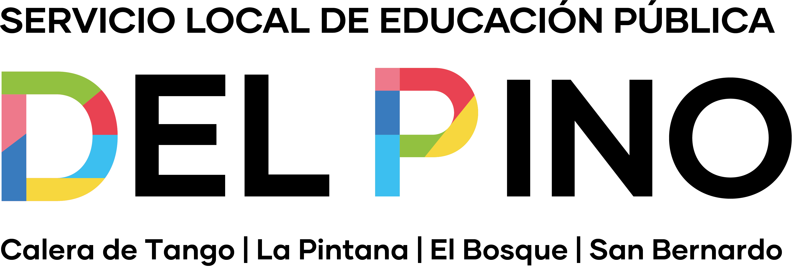

Promedio General
—
Lectura
—
Matemática
—
Puntajes Registrados
—
EvoluciónLectura
EvoluciónMatemática
Análisis Comparativo por Curso
Selecciona un Establecimiento
Filtra un RBD arriba para ver el desglose por cursos.

Ingresa tu usuario y contraseña para visualizar los resultados DIA.
Filtra un RBD arriba para ver el desglose por cursos.
Las rondas Diagnóstico e Intermedio usan instrumentos distintos: no son comparables entre sí.
Solo existe en la ronda Diagnóstico.